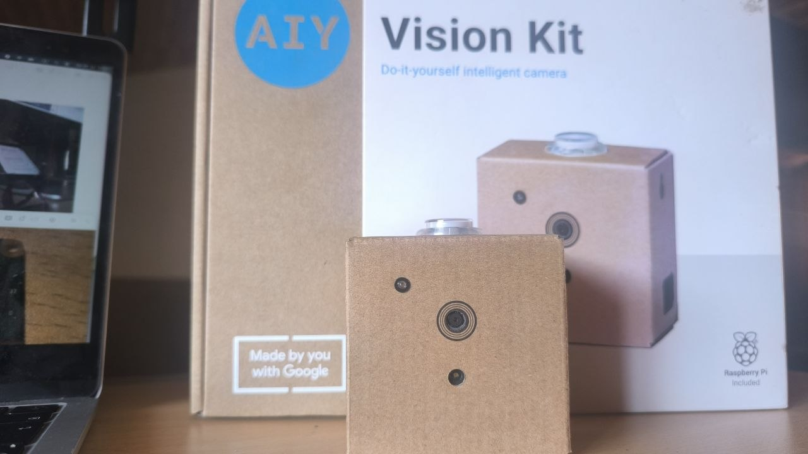
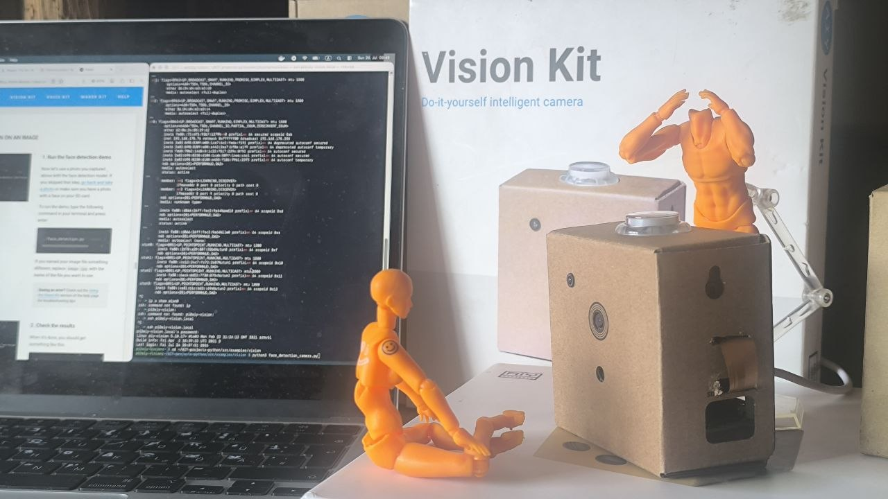
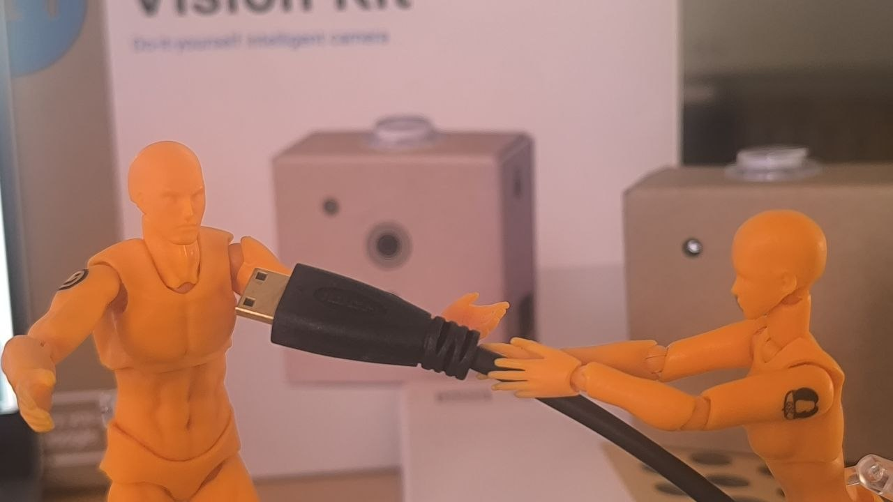
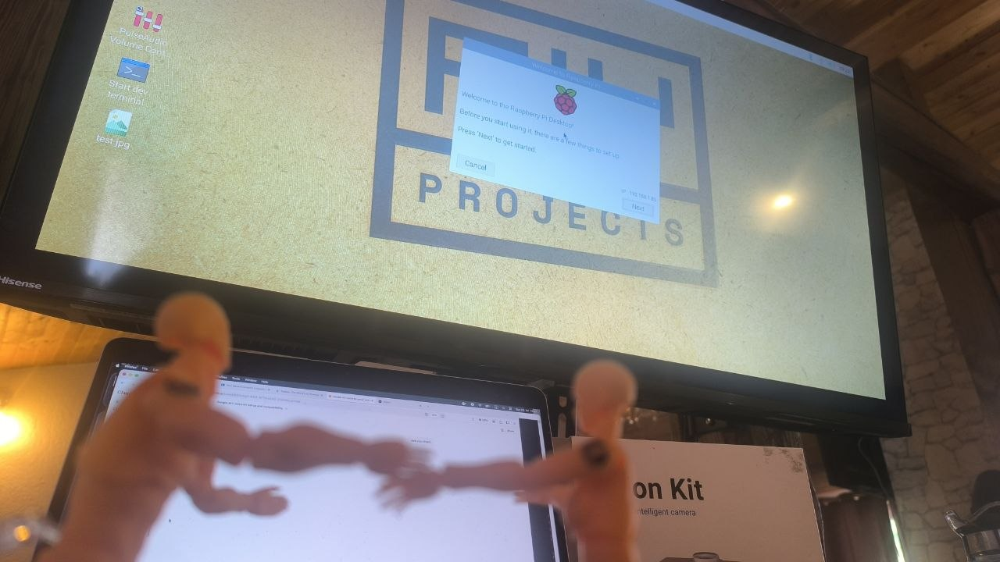
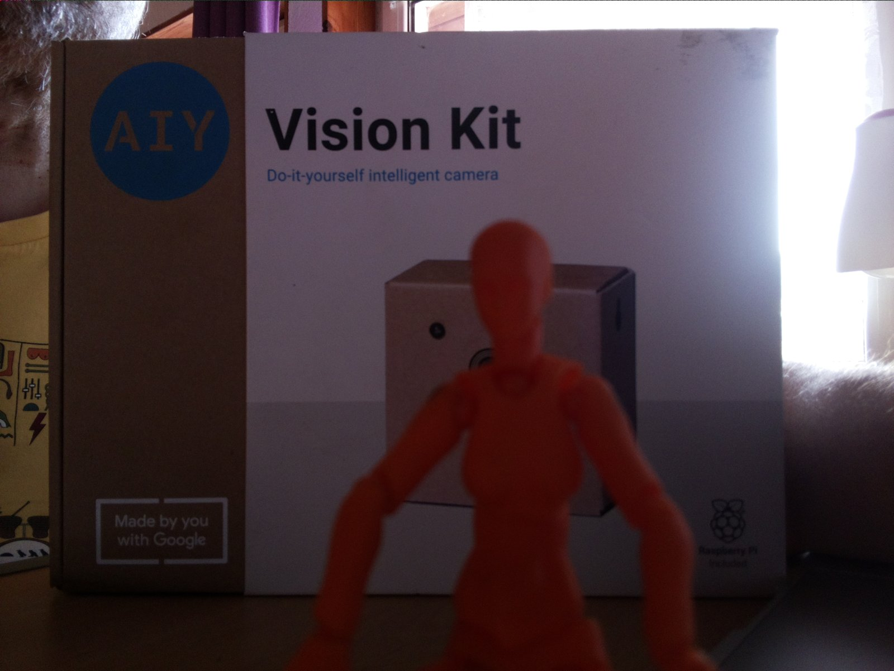
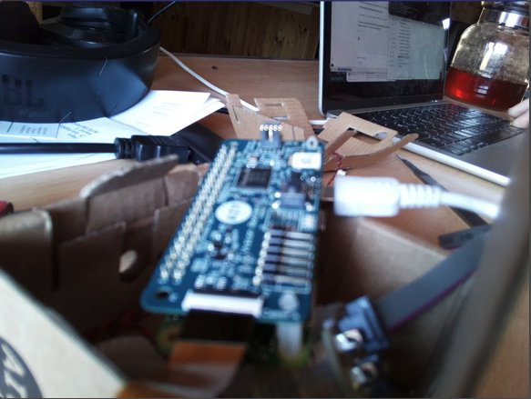
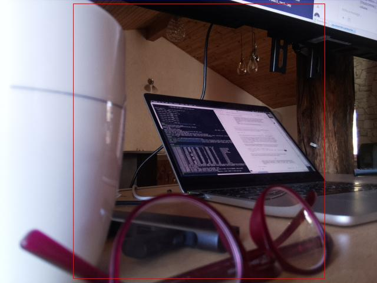
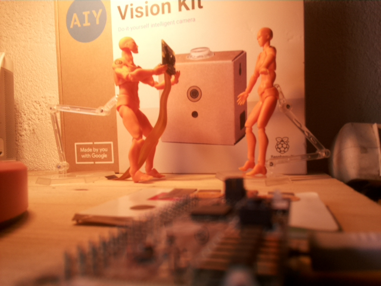

AIY Vision Kit (V1.1) — Final Build Report
Part of a multi-kit project reviving Google's archived 2017 AIY hardware line, alongside the AIY Voice Kit
The short version
- Original 2017 5MP camera module: dead, after 9 years unused. Not a cable or config issue — confirmed via multiple isolation tests.
- Replacement 8MP camera: works, once a background service conflict and a GPU memory limit were resolved.
- A second replacement 5MP camera (bought to restore the kit's original spec once the 8MP was reassigned to a different project): also defective — detects at the I2C/identity level but fails to deliver actual image data ("no data received from sensor"), even after careful reseating of both the main ribbon cable and the camera board's internal sensor connector.
- Final state: running on the working 8MP camera. Not the kit's original sensor, but a fully functional Vision Kit.
The honest part
This project involved a genuinely large amount of troubleshooting for what is, at its core, a small hobby kit: WiFi driver issues, a wrong Raspberry Pi board revision, an outdated cloud API library, a background service silently hogging the camera, a GPU memory ceiling, an mDNS networking mystery, a WiFi power-management bug, and finally two separate camera hardware failures in a row (one original, one brand-new replacement).
Some of that was the expected cost of reviving 9-year-old, since-archived hardware. Some of it — particularly the second camera failing — was just bad luck with a cheap component, not something more troubleshooting would have fixed. At a certain point, continuing to chase a second defective unit stopped being good use of time, and switching to the already-proven working camera was the right call rather than a failure to solve the problem "properly."
Worth saying plainly: if the goal was purely "get a working smart camera," buying a modern Pi camera setup from scratch would have taken an afternoon, not several weeks. The value here was never speed — it was in actually understanding why each thing broke, documented clearly enough that someone else stuck on the same archived kit won't have to rediscover all of this from scratch.
What this project actually demonstrated
- Systematic hardware debugging: isolating cable vs. camera vs. board vs. config vs. background software, one variable at a time
- Reading and correctly interpreting low-level Raspberry Pi firmware diagnostics (
vcdbg) rather than guessing - Recognizing when a symptom is a known false lead (the Pi Zero's non-existent power LED, the generic
open_camera_peripheralassert vs. a genuine sensor fault) versus a real signal - Knowing when to stop debugging a defective component and pivot to a working alternative, rather than treating "keep trying" as inherently more rigorous
Reference documents
- Initial WiFi/networking troubleshooting log
- First camera failure & fix (8MP swap)
- Live demo session (face/joy/object detection working)
- Voice + Vision + Arm roadmap (phased plan, parts list, hardware notes) — see the full roadmap
- This document — final state and honest retrospective
Gallery








What's next
Next: the SO-ARM101 leader/follower arm, and eventually a Pi 5 + AI Camera as the platform for combining voice, vision, and manipulation into an actual lab assistant.